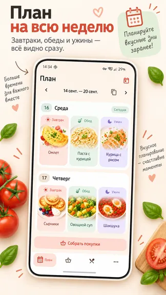
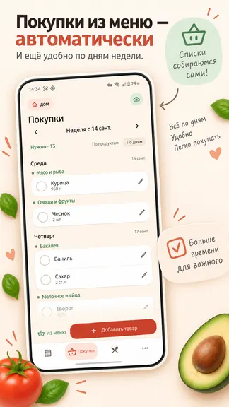
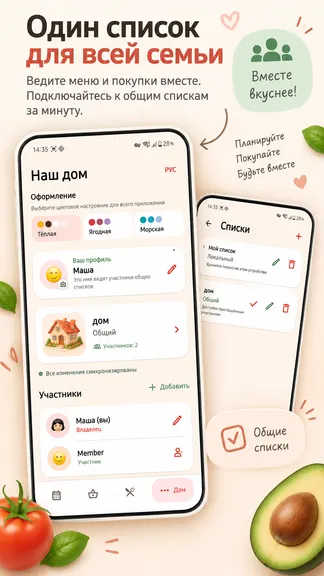
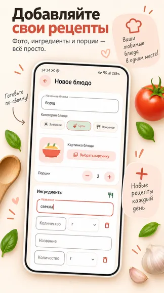
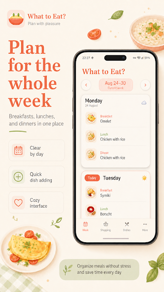
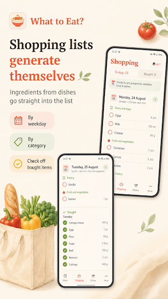
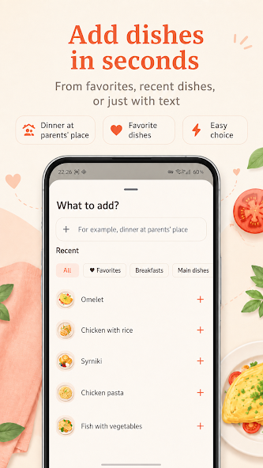
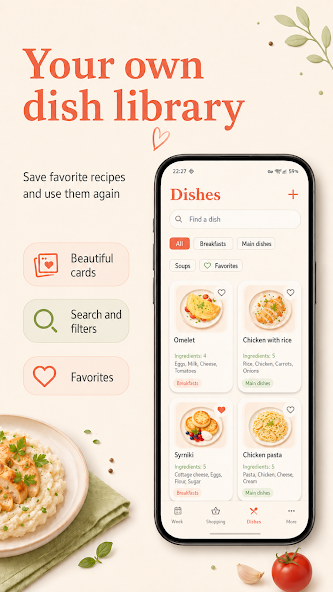
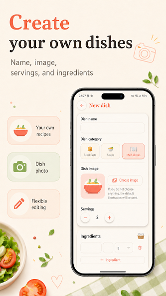

Планирование без суеты
- Меню на неделюРаспределяйте блюда по дням и заранее видьте план питания.
- Любимые рецептыХраните проверенные блюда рядом, когда нужны новые идеи.
- Список продуктовПереходите от выбранных блюд к необходимым покупкам.
Планировщик меню · Android
Больше не нужно каждый вечер заново решать, что приготовить. Соберите любимые рецепты, распределите блюда по дням и превратите недельное меню в понятный список продуктов.
Меню · рецепты · продукты








Когда меню готово, перенесите всё нужное в общий семейный список «Докупить» и отмечайте заканчивающиеся домашние запасы.